A bank wants to decide whether a loan applicant should be given a loan or not, based on features like income, credit score and past records. Which of the following machine learning techniques is applicable for this scenario?
Regression
Classification
Clustering
Dimensionality Reduction
Q2MCQ3 marks
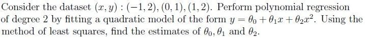
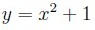
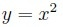
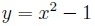
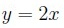
Q3MSQ2 marksselect all that apply
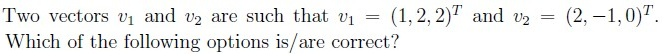
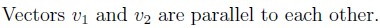
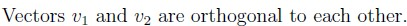
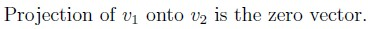
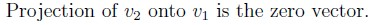
Q4SA3 marks
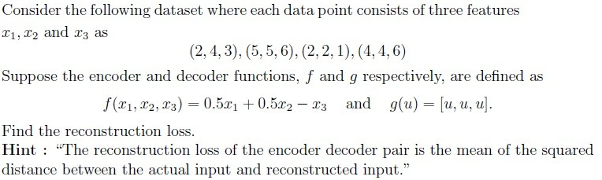
Q5SA3 marks
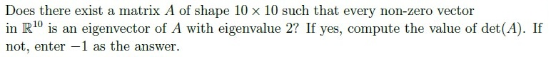
Q6SA2 marks
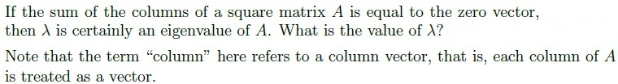
Comprehension passage - the questions below it refer to this
Based on the above data, answer the given subquestions.
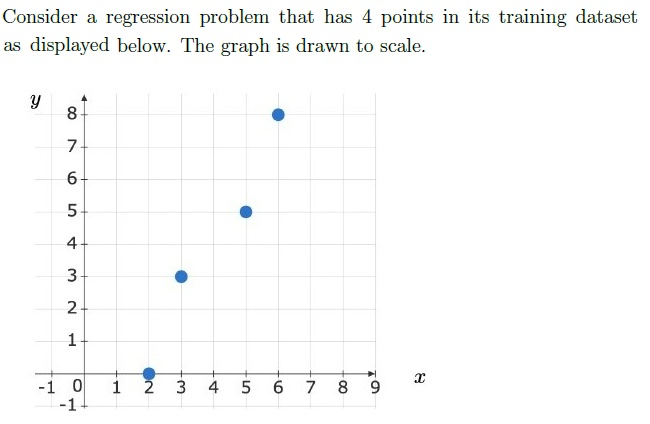
Q7MCQ3 marks
Which of these models has the smallest squared loss on this training dataset?
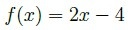
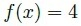
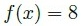
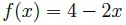
Q8MCQ2 marks
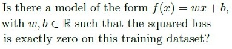
No
Yes
Insufficient information to answer the question
Comprehension passage - the questions below it refer to this
Based on the above data, answer the given subquestions.
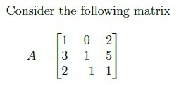
Q9MCQ3 marks
Which of the following sets forms a basis for the row space of A?
{(1, 0, 2), (0, 1,−1)}
{(1, 0, 2), (0, 1,−1), (0, 0,−1)}
{(1, 0, 2), (0,−1, 1), (0,−1,−4)}
{(0, 1,−1), (0, 0,−4)}
Q10MCQ2 marks
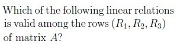
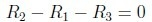
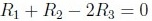
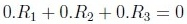
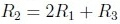
Comprehension passage - the questions below it refer to this
Based on the above data, answer the given subquestions.
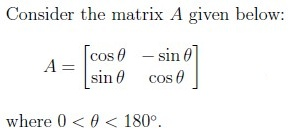
Q11MSQ2 marksselect all that apply
Which of the following is/are true?
A is an orthogonal matrix
A is invertible
A is symmetric
Q12MCQ3 marks
Which of the following is true?
A does not have real eigenvalues
A has two distinct real eigenvalues
A has two real eigenvalues, not necessarily distinct
Comprehension passage - the questions below it refer to this
There is no common data for this question. There are three independent sub-questions for which you have to answer True/False.
Q13MCQ2 marks
If a square matrix A is diagonalizable, then A is invertible.
True
False
Q14MCQ1 mark
The eigenvalues of a real symmetric matrix are real.
True
False
Q15MCQ2 marks
A square matrix A of shape n x n is diagonalizable if and only if it has n distinct eigenvalues.
True
False
Comprehension passage - the questions below it refer to this
Based on the above data, answer the given subquestions.
Auto-generated summary from the source site. Handy as a checklist; the lessons above explain each idea from scratch.
Here’s a structured summary of core topics, concepts, principles, and equations for the "Diploma Level: Machine Learning Foundations" exam, along with Mermaid knowledge graphs to visualize relationships.
1. Core Topics & Concepts
A. Machine Learning Fundamentals
1. Supervised Learning
Classification (Binary/Multi-class):
Used for discrete outputs (e.g., loan approval: Yes/No).
Final Tip: For math-heavy questions, practice matrix computations (determinants, eigenvalues, basis) and loss function derivations. For ML, understand when to use classification vs. regression.